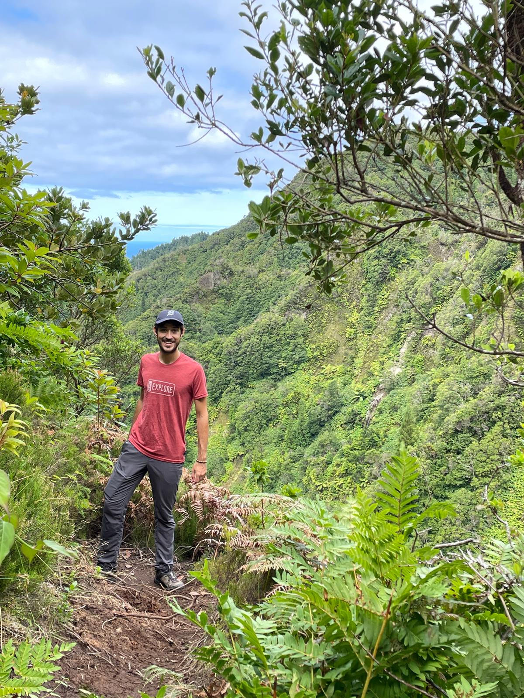

Rock Sparrow
My research on the Rock Sparrow (Petronia petronia) explores how climate warming affects migration timing, reproductive investment, and behavioural strategies. I combine long-term datasets with fieldwork in breeding colonies.

PhD Candidate · Dipartimento di Biologia · Università di Padova
I am a PhD candidate at the University of Padova, Italy, where I investigate how climate warming impacts key avian life stages, from migration to reproduction. My interest bridge
morphology, phenology and behaviour, with a focus on how these traits respond to enviromental change.
My work is mainly based on two model species, the Rock Sparrow _Petronia Petronia_ and the Lesser Kestrel _Falco naumanni_, drawing from a combination of historical data and ongoing fieldwork.
My research on the Rock Sparrow (Petronia petronia) explores how climate warming affects migration timing, reproductive investment, and behavioural strategies. I combine long-term datasets with fieldwork in breeding colonies.
The Lesser Kestrel (Falco naumanni) serves as a model for studying phenology, colony dynamics, and climate-driven shifts in reproductive success. My work integrates historical monitoring data with behavioural observations.

Email: federico@example.com